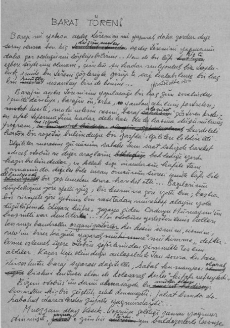

Barajı mı yoksa açılış törenini mi yapmak daha zordur diye soran olursa ben hiç düşünmeden açılış törenini yapmanın daha zor olduğunu söyliyebilirim. Hem de bu lafı hiç de ezbere söylemiş olmam, çünkü şu kadar milyonluk bir topluluk içinde bu töreni gözleriyle görüp de sağ kalabilmiş bir kaç bin mutlu insanlardan biri de benim!
Barajın açılış töreninin yapılacağı birkaç gün evvelinden, içinde davetiye, barajın ön, arka, yandan çekilmiş portreleri, kesiti, makinelerin resmi, baraj alanını gösteren kroki, en ufak teferruatına kadar dakikası dakikasına düşünülmüş program ve içinde kurdeleli karton bir rozetin bulunduğu bir zarfla protokolde olanlara bildirildi! İlgililer tören gününün sabahı tam sekizde hareket edecek otobüs ve diğer araçların beklediği yerde hazır bulundular ve Allah sizi inandırsın kafile tam zamanında değilse bile insan ömrünün süresi içinde lafı bile edilmeyecek bir gecikmeden sonra hareket etti! Bazılarının söylediğine göre yedi yüz, bir kısmına göre yedi bin, başka bir rivayete göre yetmiş bin vasıtadan mürekkep alayın yola düzülüşünde “Diyar-ı küfre”[60] gazaya giden ordu-yu hümayun haşmeti var denebilirdi!
Her otobüse yerleştirilmiş kolları kırmızı bandrollü organizatörler herkesin ismini, cismini, nevini birer kâğıda yazarak “Mühimme” defterlerine işlemek için otobüs şoförlerinden zimmetle teslim aldılar... Kaçar kişi olunduğu anlaşıldıktan sonra herkese ikişer kutu baraj sigarası dağıtıldı, sabah kumanyası olarak bisküi kutusu elden ele dolaşarak herkes “Kifaf-ı nefs” eyledi...
Bizim otobüsün damı akmasaydı bu mutlu olayı karartan hiçbir şey çıktı denemezdi, fakat bunda da kabahat idarecilerden çok yağmurdaydı doğrusu!
Muazzam alay Kesik Köprüye geldiği zaman yağmur dinmişti, ama o günkü tören için buldozerlerle “tesviye” edilmiş tepe, cinsi ne olursa olsun her nevi ayakkabıya sahip çıkan bir çamur deryası halini almıştı! Büyükler gelmeden evvel herkes yerini aldı. En ön sırada külot pantolon, pardesü, palabıyık ve de kasketleriyle parti, ocak, bucak mensupları rüzgârın şiddetinden her an ellerinden kurtulup kaçmak ister gibi çırpınıp duran dövizleri zaptetmekle meşguldüler...
Yol boyunca köy evlerinin önüne dizilmiş bekleşen köylüler tarafından hazırlandığı söylenen bu dövizler hepsi aynı boyda, aynı boya ile aynı bezlere yazılmış “vecizelerdi”... Bunları gören yabancı gazeteciler Türkiye’de artık standardizasyon diye bir konunun ele alındığına can-u yürekten inandılar! Birden kalabalıkta bir kaynaşma oldu, ayaklarının ucuna basabilenler ayaklarının ucuna basarak, boynunu uzatabilenler boynunu uzatarak kaynaşmaya katıldı... En ön sırada dövizleri ellerinde kasketleri başlarında partililerin omuzları üstünden, kol koltuk aralığından büyüklerimizi görenler görebildikleri kadarını gördüler, göremiyenler hiç olmazsa görebilenlerin yanında olmanın verdiği bir iç huzuru, mutluluk havası içinde, uğuldıyan rüzgârın yarısını kapıp götürdüğü nutukları dinlemiye çalıştılar! En evvel Bakan[61] barajın ne olduğunu, kaç metre küp beton, kereste, kaç ton çivi, demir harcanacağını, inşaatta kaç bin kişi çalışacağını, bunlardan kaç ailenin çocuğu olacağını bu çocuklardan kaçının kız kaçının erkek olacağını, erkek çocukların sünnet, kız çocukların evlenme törenlerinde baraj fonundan yapılacak sosyal yardımları, her şeyi hiçbir şeyi gizlemeden en ufak teferruatına varıncaya kadar anlattı, sonra sözü Olimpiyat Meşalesini teslim eden bir atletin heyecanıyla Başbakan’a bıraktı, aslına bakılırsa Başbakan için söylenecek bir söz pek de kalmamıştı, fakat bu dâhi insan vatan sevgisinden ağzından burnundan dumanlar püskürterek o soğuk ve fırtınalı günde Türk milletinin tarihine altın harflerle geçecek olan sözleri bulup söylemesini bildi.. Kalabalıkta duracak hal kalmamıştı. Herkes olduğu yerde zıplıyor, temelin ilk kayalarını yerinden sökecek dinamitin atıldığını bildiren ampulün yanmasını bekliyorlardı... Bu açılış töreninin ilk kısmıydı, burada inşa edilecek barajın temeli atılacak, törenin asıl kısmı 60-70 km. öteki büyük barajın işletmeye açılmasıyla tamamlanacaktı...
Vakit öğleden sonrayı epice geçmişti, Başbakan bir harman yerinde savrulan buğday sapları gibi kapanın kulağında kalan nutkunu bitirdikten sonra sözü büyük bir saygı içinde Cumhurbaşkanına verdi.. Cumhurbaşkanı için söylenecek hiçbir şey kalmamıştı, evvela herkes Cumhurbaşkanının hiçbir şey söylemediğini zannetti, etrafı kaplıyan heyecan dalgası en ulvi noktasına ulaşmış, bu hava içinde rüzgâr da sanki bu heyecana katılmak istercesine şiddetini büsbütün arttırmıştı.. Ön sırada bölünmez bir saf halinde duran particiler bir elleri ile dövizleri bir elleriyle de kasketlerini zaptetmiye çalışıyor, incecik atkılı iskarpinlerinin şekli çamur tabakasının altında zorlukla belli olan bayan törencilerin etekleri rüzgârda her an bir sürpriz yaratmanın isteği içinde çırpınıyordu! Nihayet uğultunun biraz hafiflediği bir sırada yücelerden yüce, insan üstü bir yaratık olan Başkan’ın mikrofonda konuştuğu anlaşıldı, biraz sonra parmağını bir düğmeye basarak vereceği işaretle karşı sırtlarda bir dumanın yükseleceğini, bu dumanın göklerde yükselen “Türk Gücünün” görülmemiş kalkınmanın bir işareti olduğunu, Türk Milleti’nin kaderinin bu dumanda yaşadığını, bu dumanı görmenin bir vatan borcu, bir insanlık ödevi olduğunu anlattı... Hakikaten birkaç saniye geçince karşı sırtlarda kara bir dumanın yükselerek kayaların etrafa sıçradığı görüldü, biraz sonra da atılan temelin gürültüsü kulakları doldurdu!
Büyükler en büyükleri başlarında, daha küçükleri yan ve arkalarda olmak üzere geldikleri gibi ağır fakat metin adımlarla çekilip gittiler, ancak o zaman herkes yemek vaktinin çoktan geçmiş olduğunun farkına vardı... Bir kısmı ileride “Kumanya” çadırları kurulduğunu, herkesin kumanyasının üstünde isim ve adresi yazılı olarak ayağına getirileceğinden bahsediyordu, fakat ortada ne kumanya, ne çadır, ne de buna benzer bir işaret yoktu... Büyükler gitmişlerdi, muazzam kalabalık hayat mücadelesi ortasında yalnız bırakılmış bir genç gibi kendini üzgün ve süzgün hissetti.. Gözlerde beliren tasa en katı yüreklileri bile ağlatacak kadar derindi, ceplerindeki programa bakanlar kafilenin çoktan açılış töreni yerine hareketi gerektirdiğini gördüler...
Nihayet son gelen haber bütün ümitleri söndürmeye yetmişti, kumanya kamyonları yağma edilmişti, içinde dünya nimetlerinin bulunduğu mukavva kutuların büyük bir kısmı kargaşalıkta çamurlar içinde ezilmiş, daha büyük bir kısmı kapanın elinde kalmıştı. Civar kasabalardan, köylerden, en akla gelmedik yerlerden beklenmiyen davetliler gelmiş, tam bir demokrasi anlayışı içinde yiyecek paketlerini aralarında pay etmişlerdi... Bereket versin elde bir program ve bu programı tatbik etmek için kurulmuş bir teşkilat vardı... Nihayet “kumanya” kamyonlarının oraya yanlışlıkla geldiği, yiyeceğin esas barajın açılışı sırasında verileceği öğrenildi... Teşkilatçıların jandarma kuvvetinin de yardımıyla gösterdikleri cansiperâne gayret, hayatlarını hiçe sayarcasına göze aldıkları fedakârlık sonucu kırk elli kamyon kumanyanın yok olmaktan kurtulduğu, yola çıkarıldığı öğrenildi, kalabalık tevekkül içinde yola koyulmıya hazırlandı... Bulabilenler evvelce bindikleri arabalara, bulamıyanlar bulabildiklerine binerek hareket edildi! Kafile yola çıkmasına çıkmıştı ama yolun fikrinin sorulmadığı sonradan anlaşıldı. Yağmurdan kaygan bir hale gelen yol ağır trafiğin altında fırından yeni çıkmış ramazan pideleri gibi yumuşayıvermişti, otobüslerin her geçişinde bir kere göbek atıyor, vasıtalar St-Mauritz, de kayak yapan bir genç kız çalakiyeti ile yokuş aşağı geri kayarak hareket noktasına dönüyorlardı! Bereket versin her derde deva olan karayollarının greyder mreyder gibi ağır makineleri uzakta değildi, bir kocabaş hayvan sabrıyla kaygan yolda yokuşu çıkamıyan otobüsü ağır, fakat emin adımlarla yokuşun başına çıkarıyor, sonra aynı feragat aynı sabırla dönerek yeniden işe başlıyorlardı... Bu gayreti görenler yüzlerce arabanın tepeyi aşması için lazım gelen zamanı hesaplamıya başladılar, en kötümser tahminlere göre en aşağı bir ay, en iyimserlere göre de hiç olmazsa üç dört gün lazımdı! Kafilenin yarısından azı şoför üzerine baskı yaparak otobüsteki idarecinin şiddetle itirazına rağmen daha uzun fakat emin olan devlet yoluna sapan bizim otobüsün peşine takılarak çamurlara saplanıp geceyi soğukta geçirmekten kurtuldu... İşte törenin son kısmının bir kısmını görebilenler bu bir avuç denebilecek (iki üçyüz otobüs kadar) “Bakıyetüs’süyuf” oldu... Bu “Bakıyetüs’süyuf” törenin ancak bir kısmını görebildi, çünkü büyükler otobüste olmadıkları için tepeyi aşabilmişler, vaktinde tören yerine gelerek Barajı işletmiye açmışlardı... Her zaman olduğu gibi büyük, geniş sofralarda oturulup şampanyalar içilmiş, kuzu dolmaları, ıstakozlar, her nevi dünya nimetleri mahzun bakışlarla kendilerini yiyecek olanları aramışlardı, kocabaş ve küçükbaş kurban kesimi de yapılıp hayvanlar Et-Balık’ın kamyonlarıyla kombinaya yollandıktan sonra “Bakıyetü’s-süyuf”[62] vaka mahalline gelebildi.. On binlerin ricatini anlatırken Xenophone[63] onların yıllarca süren yolculuktan sonra Trabzon tepelerinden denizi ilk gördükleri zaman sevinçten ağladıklarını söyler... “Bakıyetü’s-süyuf” da dev gibi barajın hemen yanında otobüs, otomobil, araçlardan inince az kaldı sevinçten ağlıyacaktı! Çamur diz boyu, hava ayaz, rüzgâr dedikoducu bir kadının dili gibi ısırıcı, fakat gözlerden nihayet amaca ulaşmanın sevincinden doğma bir parıltı vardı! Büyüklerin töreni yapıp çoktan gittikleri duyulunca bu parıltı biraz söndü, kocabaş kesimi yapılıp bittiği öğrenilince biraz daha söndü, kumanya kamyonlarının yanlışlıkla başka yere gittikleri söylendiği zaman bütün bütün söndü!
Yabancı basın ataşeleri, fotoğrafçılar, milletlerarası ajansların temsilcilerinden bu kerteye yetişebilenler makineleri boyunlarında, şaşkın şaşkın dolaşıyor; dillerinden biraz anlıyan birisini arıyorlardı... Nihayet kalabalık arasında bir haber iftira gibi dolaştı, her şeyi gören, en uzak ihtimalleri bile evvelden kestirip düşünen idarecilerin kumanyayı sağ selamet getirdikleri, barajın ayağındaki santral binasına depo ettikleri duyuldu ve kalabalık seksen bir metre aşağıdaki binaya doğru akmıya başladı, bu adeta insandan yapılma bir yar’ın kaymasıydı.. Hiçbir harpte böyle “Mehabetli” bir manzara görülmüş olamaz, hatta Kırım Savaşı’nda Balaklava’da İngiliz “highlanders”lerinin[64] o babadan oğula anlatılan, Kraliçe Viktorya’yı bile iki gözü iki çeşme ağlatan meşhur hücumları bile bu kadar kahramanca olmamıştır! Tepelerden sel gibi akan bu müthiş kalabalığın karşısında koca barajın nasıl olup da korkudan çatlayıp bütün suyunu donuna kaçırmadığına heybetli santral binasının bütün türbinlerini âlât-ü edevatını sırtına vurup nasıl dört nala kaçmadığına ne kadar şaşılsa azdır!
Kalabalık aşağı inmiş, büyük bir şölen’in artıklarıyla baş başa kalınca şaşırmıştı... Üzerlerinden örtüleri alınmış çıplak tahta masalar teneşir soğukluğu ile göz alabildiğine uzanıyorlardı.. Felaketin asıl dehşeti biraz sonra anlaşıldı; kumanyanın depo edildiği santral binası bir polis ve jandarma kordonu altına alınmıştı.. O anda seksen bir metre yüksekliğindeki baraj kalabalığın başı üstünde bir “heyûlâ” gibi yükseliverdi... Ümitsizliklerin kahramanlığı, aç midelerin insan sürüsüne verdiği önüne geçilmez kuvvet, damarlarında asil açlığın dolaştığı bu insanlara akıncı cetlerinin kahramanlıklarını hatırlatmış gibi evvela kordona, sonra kapılara dayanıldı; barajın vanalarından biri sonuna kadar açılmışçasına uğuldıyan kalabalık santral binasından içeri boşaldı, üzerinde ellerinde ekmek somunları, kumanya kutuları bekleşen idarecilerin bulunduğu balkonun altına kadar gelip durakladı... Ondan sonra Londra veya Berlin’de İkinci Dünya Savaşı’nın sayılı uçak akınlarını görmüş yabancı gazetecilerin ağızlarını şaşkınlıktan bir karış açık bırakan olay meydana geldi, Beni İsrail’e gökten yağan kudret helvası nasıl yukarlardan inen bir sofra idi ise DSİ’nin kolları bandrollu idarecilerinin aşağıdaki “Cemmi Gafiri” tuttukları Dünya nimeti bombardımanı da aynı şeydi denebilir; yalnız Beni İsrail gökten yağan bu nimeti sükûnet içinde toplanmış, afiyetle yemişti, santral binasının içiyse kıyametten bir gündü sanki, paketleri havada yakalıyabilmek için iki insan boyu zıplıyanlar yüzükoyun kalabalığın üstüne düşüyor, kutulardan fırlıyan portakal, sucuk, helva gibi şeyler şaşkın şaşkın oradan oraya yuvarlanıyorlardı! Herkes haykırıyor, herkesin gözünde kalabalıkları ara sıra saran kollektif cinnetin parıltısı seziliyordu.. Kargaşalığa, ortalığı saran bu cinayet havasına son vermenin bir tek çaresi vardı: Nimet bombardımanına son verip herkesin sıra ile alacağını alması... Fakat uzağı gören idareciler Yehova’nın gökteki meleklerini taklitten vazgeçmek niyetinde değildiler, eline bir kutu geçiren ikinci kutuyu kapmak için çabalıyor, ikinci kutuyu kapan üçüncü, dördüncü, onuncu kutuyu ele geçirmeyi bir vatan borcu, görülmemiş kalkınmaya karşı bir nimet borcu sayıyordu! Baraj töreni bu gökten yağan ekmek somunu, kumanya yağmuru altında böylece bitti. Civar köylerin bütün fırınlarında günlerce “Baraj ekmeği” satıldı; bütün çoban köpekleri bu unutulmaz günün kalıntıları ile aylarca beslendiler, o gün kargaşalıkta vasıtalarını bulup binemiyenler baraj gölünün etrafında ilerde kurulacak turistik şehrin fidesi kulübeciklerde ertesi günü beklediler, fakat bu en büyük olayı gazetelerine yetiştirmek için gelmiş foto muhabirlerinden hiçbiri memleketlerine el kadar bir resim bile gönderemedi, çünkü bu hengâmede kıyametten nişan veren bu ana baba gününü seyretmekten hiçbirisinin aklına boyunlarında asılı fotoğraf makinelerinin düğmesine basmak gelmedi!
2 Şubat 1960 / Ankara